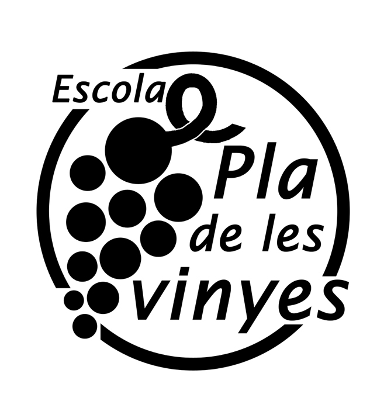

Experiencia laboral
FCT
Prácticas de grado medio de informática en el centro escolar "Pla de Les Vinyes".
He estado 220h en este centro, algunas de las tareas desarolladas han sido el mantenimiento de la página web con wordpress y
en gran parte soporte técnico.
Me ha servido bastante para ampliar conocimientos de hardware y más, ya que me he encontrado con problemas que no había vistro previamente y he acabado solucionando.

Contacto
Hospitalet de Llobregat
100006994.joan23@fje.edu